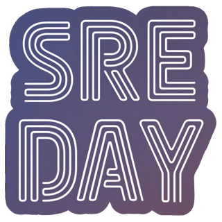
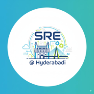
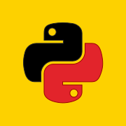

Community / Learn in public
Better systems
through shared ideas.
Volunteering is where I contribute. Conferences are where I listen, connect, and bring useful ideas back into practice.
01 / Volunteering
Communities I help build.
Hands-on contribution to the people, planning, and details behind local technical communities.

Volunteer lead · HyderabadSREDAY Hyderabad
Helping shape a practitioner-focused event around the craft of reliability engineering.

Volunteer · Local communitySRE Hyderabadi
Creating opportunities for local engineers to learn, exchange patterns, and build connections.

Volunteer · PythonPyConf Hyderabad
Supporting the people and details that make community-led technical conferences work.
02 / Attended
Events where I keep learning.
Separate moments in an ongoing learning journey across cloud native, observability, search, and open source.
KubeCon + CloudNativeCon India
Following the ideas and operating practices shaping the cloud-native ecosystem.
KubeCon + CloudNativeCon India
Connecting with practitioners across Kubernetes, platforms, and open-source infrastructure.
Attendee · Search & observabilityOpenSearchCon India
Learning about search, observability, and the systems behind them.

Attendee · Open sourceOpen Source Summit India
Connecting with the wider open-source and platform engineering community.